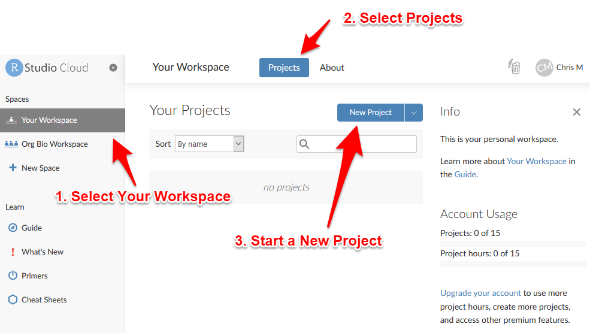

2 Create A Project
2.1 What are Projects?
RStudio projects make it straightforward to divide your work into multiple contexts, each with their own working directory, workspace, history, and source documents (scripts), and data files.
2.2 Create a Project in RStudio Cloud
Go to Rstudio Cloud and sign in.
To create a new project:
- Go to Your Workspace
- Go to the Projects area
- Click the button to start a New Project

Wait a moment while your new project is deployed.
When the screen refreshes you will have a new, empty project and you can move on to the next step.